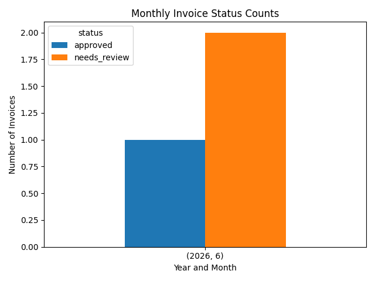
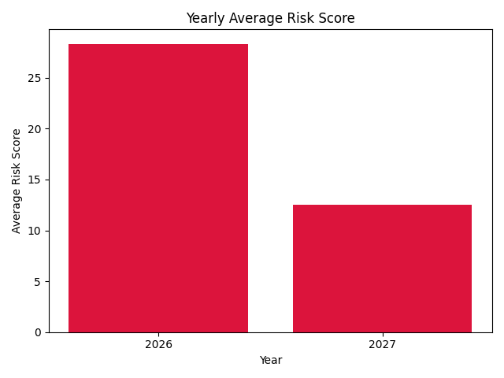

AI + Automation + Data
AI Document Intelligence Hub
Business dashboard for invoice automation, risk analysis, and recommendations.
Business Recommendation
Loading recommendation...
Yearly Recommendation
Loading recommendation...
Status Counts
Risk Score By Invoice
Monthly Status Counts

Yearly Invoice Amount
Yearly Average Risk
